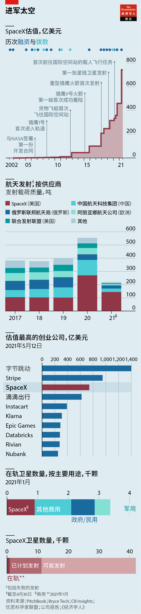
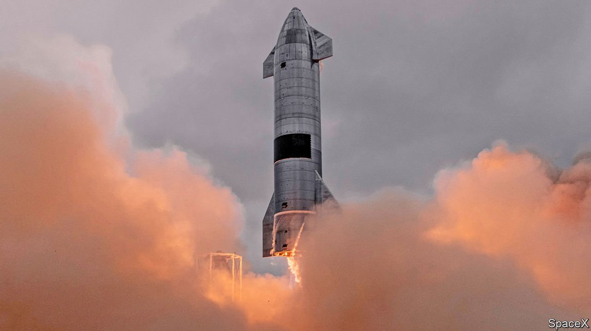
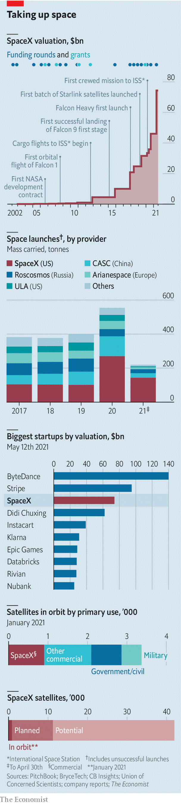

2021-05-23T15:47:58+00:00
马斯克的另一家公司
SpaceX——飞上天的特斯拉
在彻底改变了火箭发射业务后，SpaceX又瞄上了电信业【深度】

有起必有落。比特币无疑是这样。今年2月，特斯拉在其资产负债表上增加了15亿美元的比特币，这种受马斯克热捧的加密货币价值随之飙升。5月12日，特斯拉不再接受客户用比特币购车，比特币价格应声暴跌。马斯克对使用化石燃料“开采”比特币感到担忧。相比比特币，SpaceX公司的巨型“星舰”（Starship）火箭原型机最近的一次升降更优雅些。“星舰”意在成为自土星5号（Saturn V）将阿波罗计划的宇航员送上月球以来最大的火箭。5月5日，这艘原型机在得克萨斯州的博卡奇卡（Boca Chica）升空，飞到10公里的高度后，又自己飞回发射台，徐徐着陆。这不是星舰首次高空试飞，却是首次不以爆炸告终的试飞。
这是SpaceX最新的一则好消息。2002年，马斯克创立了这家火箭公司，而他更广为人知的身份或许还是电动汽车先驱特斯拉的创始人。和特斯拉一样，SpaceX选择对一种失宠的技术下手，对之做出激进的改进，撼动了一个安于现状的行业。尽管特斯拉“加速世界向可持续能源的转变”的使命已经很宏大了，但SpaceX的目标更是有过之而无不及。马斯克希望利用它的低成本火箭在火星上建立殖民地，让人类成为“跨行星的星际文明”。此外，与特斯拉一样，SpaceX的估值也在飙升。数据分析公司PitchBook称，SpaceX4月完成了最新一轮融资，估值从2020年8月的460亿美元升至740亿美元。分析公司CB Insights把SpaceX列为世界第三大最有价值的创业公司（见图表）。
火箭超人
把一家有着19年历史的公司说成“创业公司”似乎有些奇怪。但SpaceX不断上涨的估值中，大部分并非来自它已有的业务，而是投资者对它未来的希望。这一点又与特斯拉一样。为了给它雄心勃勃的火星计划买单，SpaceX计划把自己转型成一家覆盖全球的电信巨头。它希望再现马斯克对现有技术做出重大改进的标志性手法。它的“星链”服务项目正在建设有史以来最大的卫星网络，以向地球的每个角落提供高速互联网接入。目前该项目已对美、英、德等国的测试者开放。
SpaceX在火箭技术上的进步为此奠定了基础。它的火箭非同寻常，因为可以重复使用，而不是一次性的。发射后，猎鹰9号的第一级火箭可以自行飞回地球；经过为期几周的翻新后，又能重新执飞。加上注重削减成本、勇于实验和冒险，SpaceX的发射价格远远低于竞争对手。
就和面对特斯拉一样，那些固步自封的同行老企业也在设法应对SpaceX带来的冲击。由波音和洛克希德·马丁这两家航空航天巨头合资的联合发射联盟（United Launch Alliance）已经削减了职位和成本。去年11月，它的老板托里·布鲁诺（Tory Bruno）表示，宇宙神-5（Atlas V）火箭的单次发射价格已从2.25亿美元降到1亿美元出头。欧洲的阿丽亚娜航天公司（Arianespace）也降低了阿丽亚娜5型（Ariane 5）火箭的发射价格，据信它每次的发射成本约为1.75亿欧元（2.13亿美元）。该公司希望，预定在明年首飞的阿丽亚娜6型（Ariane 6）火箭的发射成本将比5型低40%。而SpaceX对新火箭发射的收费是6200万美元，旧火箭是5000万美元。
低价格、注重成本控制、敢于冒险，以及快速迭代（马斯克的另一个标志性特征）帮助SpaceX赢得了各种合同，签订方包括铱星（Iridium）和Intelsat这样的老牌卫星公司、Planet等创业公司，以及美、德、韩等国政府。4月16日，美国国家航空航天局（NASA）向SpaceX拨款29亿美元，用于开发月球着陆器，这是美国在2024年让宇航员重返月球计划的一部分（尽管因为政府机构正在审查对手公司的投诉，该合同已在4月30日暂停）。SpaceX计划在9月15日将四名游客送上太空，开展为期三天的环绕地球之旅。摩根士丹利称SpaceX是快速增长的“新兴太空”部门的“指挥中心”——据风险投资公司Seraphim Capital估计，截至今年3月的一年里，该部门吸引了87亿美元的风险投资，比前一年增长了95%。
而且它不是原地踏步。星舰的运载能力是猎鹰9号的六倍多。尽管它体积巨大，却可以完全重复使用，而且意图比SpaceX现有的火箭便宜得多。马斯克希望星舰的单次发射成本最终能低于200万美元。
分析与工程公司BryceTech的西蒙·波特（Simon Potter）表示，无论SpaceX的技术有多出色，火箭发射都是一个相对较小的市场，2019年规模约为60亿美元。政府出于对国家安全的担心，庇护许多企业免于全面竞争。这将限制SpaceX的市场份额。摩根士丹利的分析师亚当·乔纳斯（Adam Jonas）表示，SpaceX转而将发射视为助力自己其他计划的“使能技术”。它的下一个目标是电信业务。星链的目标是在全球提供互联网接入服务，包括在那些其他形式的网络连接不佳或匮乏的地方。
这个市场要大得多，至少理论上是这样。联合国下属机构国际电信联盟（International Telecommunication Union）估计，2019年全球有48%的人口无法上网。SpaceX的首席运营官格温·肖特韦尔（Gwynne Shotwell）在2019年表示，全球互联网接入市场可能为每年一万亿美元。马斯克曾表示，SpaceX可能打算争取其中约3%的份额。即便是这区区一小块，在两年前也能带来300亿美元的收入。
明日之星
卫星互联网并不是什么新想法。但它是马斯克认为他可以改进的又一项技术。现有的互联网卫星在高轨道飞行，以求让覆盖范围最大化。其缺点是许多客户必须共用一颗卫星，容量受到限制。而且无线电信号传送到在高空飞行的卫星需要一定时间，这就加大了不可避免的恼人的延迟。目前，卫星网络通常是在没有更好选择的情况下的无奈之选——比如在偏远的农村或大海中的船只上。
星链希望用低成本火箭把成千上万颗廉价的小型卫星送入低轨道来解决这些问题。波特表示，2021年第一季度，以所含质量来衡量，SpaceX发射入轨的载荷比其他所有火箭运营商发射的总和还要多。星链现有的1500多颗卫星已经占所有在轨运行卫星数量的四分之一左右。SpaceX公司已为另外一万多颗卫星明确了发射计划，已提交书面发射申请的达4.2万颗——这是自太空时代开始以来发射卫星总数的四倍有余。
这一尚处于初始阶段的服务正在接受成千上万人的测试。大多数人似乎很满意，表示它连接迅速，反应灵敏。但卫星互联网行业的历史比较惨淡。铱星在1999年也就是它创建后的第二年就破产了（它最终获得美国政府纾困）。Intelsat和Speedcast这两家老牌公司，以及与星链的商业模式类似的创业公司OneWeb，都在去年申请了破产。Intelsat目前正在重组，Speedcast也在新东家的领导下重新开展业务。但该行业如此脆弱，让人很难确定SpaceX未来的价值。摩根士丹利尝试给出的估值就跨越了两个数量级，从50亿美元到2000亿美元，其中的差异几乎都源自对星链可行性的不同假设。
咨询公司London Economics的拉斯马斯·弗莱特凯尔（Rasmus Flytkjaer）表示，即使发射成本很低，星链至少还面临两大挑战。一是它大部分的潜在客户使用的都是由地面互联网公司提供的性能很差的服务。他们往往生活在相对贫穷的农村地区。星链每月99美元的价格即使对富裕国家的用户来说也不便宜。另一个是让整个系统运作起来所需的高科技卫星天线的成本。这些天线直径23英寸，装在屋顶或墙壁上。在低轨道飞行的星链卫星会迅速划过天空，这些天线必须能够在卫星移动时追踪它们，并在一颗卫星消失在地平线之前无缝切换到下一颗卫星。
肖特韦尔在4月表示，SpaceX售价499美元的卫星天线的生产成本约为1500美元，两年前约为3000美元。SpaceX希望规模经济最终将把制造成本降到“几百美元”。 弗莱特凯尔说，铱星的问题之一是要在吸引到付费用户之前拿出足够的资金建造网络。他表示，马斯克财力雄厚，应该不太可能让SpaceX像20年前的前辈那样耗尽资金。
这些挑战或许可以解释为什么马斯克在谈到星链时一反常态，没有夸夸其谈。特斯拉在卖车时会把“狂暴模式”和“生化武器防御模式”等功能作为卖点。而星链却将自己的公开测试项目命名为“聊胜于无的Beta测试”。在去年的一次太空会议上，马斯克表示，星链目前的目标仅仅是不破产。他一再试图向现有的电信公司保证星链不会对它们构成威胁，指出这项服务不适合提供给人口密集城市里的大批客户。
目前，星链的测试项目只在少数几个富裕国家进行。然而SpaceX在5月5日表示自己已经收到了50万份预购订单。仅在美国，它就为多达500万用户申请了监管许可。去年12月，SpaceX从美国政府获得8.86亿美元的补贴，用于为农村地区提供宽带服务；据说它还在英国开展类似的谈判。并非所有国家都会如此接纳它，因为当局可能难以对星链提供的互联网接入进行审查。
弗莱特凯尔说，在较穷的国家，星链的卫星可以把农村的移动电话基站连接到互联网上，从而把成本分摊给大批用户。SpaceX正在与美国军方进行联合测试，后者对于让任何战场都获得互联网连接很感兴趣。2019年，SpaceX展示了为飞行中的军用飞机提供高速网络的能力。
马斯克并不是唯一一个认为卫星互联网时代已经到来的亿万富翁，尽管这个领域过去的表现令人沮丧。OneWeb破产后得到了英国政府和印度企业集团巴蒂集团（Bharti Enterprises）的救助。巴蒂的创始人苏尼尔·米塔尔（Sunil Mittal）是印度最富有的人之一。亚马逊的创始人贝索斯和马斯克一样有钱，也一样是太空迷，他出资创立了自己的私人火箭公司蓝色起源（Blue Origin）。亚马逊也在规划类似于星链的低轨道卫星互联网“柯伊伯”（Kuiper）。汽车行业越来越随马斯克起舞。太空行业也会一样。
2021-05-23T15:47:58+00:00
Elon Musk’s other company
SpaceX, a Tesla for the skies
Having revolutionised the rocket business, SpaceX takes aim at telecoms
WHAT GOES up must come down. That was certainly true of bitcoin, a cryptocurrency enthusiastically endorsed by Elon Musk which surged in value in February after Tesla added $1.5bn-worth to its balance sheet. It plunged on May 12th after the carmaker stopped customers using bitcoin to buy its vehicles. Mr Musk worries about the use of fossil fuels to “mine” the cryptocurrency. More gracefully, on May 5th a prototype version of SpaceX’s massive “Starship” rocket—designed to be the biggest since the Saturn V that took the Apollo astronauts to the moon—rose 10km above Boca Chica in Texas, before flying itself back to its launchpad and landing gently on the ground. It was not Starship’s first high-altitude test flight. But it was the first that had ended without a fireball.
It was the latest piece of good news for SpaceX, a rocketry firm founded in 2002 by Mr Musk, who is perhaps better known as the founder of Tesla, an electric-car pioneer. Like Tesla, SpaceX has taken an unloved technology and made drastic improvements, shaking up a complacent industry. While Tesla’s mission—“accelerate the world’s transition to sustainable energy”—is grand, SpaceX’s is even grander. Mr Musk wants to use its cheap rockets to make humanity a “multi-planetary space-faring civilisation” by establishing a colony on Mars. And like Tesla, SpaceX’s valuation has soared. According to PitchBook, a data-analysis firm, SpaceX’s latest funding round, completed in April, valued it at $74bn, up from $46bn in August 2020. CB Insights, a firm of analysts, ranks SpaceX the third-most-valuable startup in the world (see chart).
Big rocket man
It may seem odd to describe a 19-year-old firm as a “startup”. But most of SpaceX’s swelling valuation comes not from the business it already does but, again like Tesla, its investors’ hopes for its future. To pay for its Martian ambitions, SpaceX plans to transform itself into a globe-straddling telecoms giant. It hopes to repeat Mr Musk’s signature trick of making big improvements to existing technologies. Its Starlink service, currently open to testers in countries including America, Britain and Germany, is building the biggest satellite network ever, in order to beam fast internet access to every corner of the planet.
SpaceX’s advances in rocketry provide the launchpad. Its craft are unusual in that they are reusable, rather than disposable. After launch, the first stage of its Falcon 9 can fly itself back to Earth; and after a refurbishment lasting a few weeks, it can fly again. Along with a focus on cost-cutting and a willingness to experiment and take risks, that has allowed SpaceX to undercut its competitors drastically.
As with Tesla, complacent incumbents have been trying to respond. United Launch Alliance, a joint venture between Boeing and Lockheed Martin, two aerospace giants, has cut jobs and trimmed costs. In November Tory Bruno, its boss, said prices for its Atlas V rocket were down from $225m per launch to just over $100m. Arianespace, a European firm, has also cut prices for its Ariane 5, which is thought to cost around €175m ($213m) per flight. It hopes the Ariane 6, due to make its first flight next year, will be 40% cheaper than its predecessor. SpaceX charges $62m for a fresh rocket, or $50m for a used one.
Low prices, a focus on cost control, and a willingness to take risks and iterate rapidly (another signature Musk trait) have helped SpaceX win contracts with everyone from Iridium and Intelsat, established satellite firms, to startups such as Planet and governments, including those of America, Germany and South Korea. On April 16th NASA awarded SpaceX $2.9bn to develop a lunar lander as part of America’s plan to return astronauts to the Moon by 2024 (though the contract was suspended on April 30th, while a government agency reviews rival firms’ complaints). On September 15th it plans to fly four tourists on a three-day orbital jolly. Morgan Stanley, a bank, describes SpaceX as “mission control” for the fast-growing “emerging space” sector—which, estimates Seraphim Capital, a venture-capital company, attracted $8.7bn of venture investment in the year to March, up by 95% from the year before.
And it is not standing still. Starship has a carrying capacity more than six times that of the Falcon 9. Despite its vast size, it is fully reusable, and is intended to be far cheaper than SpaceX’s current rockets. Mr Musk hopes Starship could end up costing less than $2m per launch.
However nifty SpaceX’s technology gets, the launch market, at around $6bn in 2019, is relatively small, says Simon Potter of BryceTech, a firm of analysts and engineers. Many players are shielded from full competition by governments worried about national security. That will limit SpaceX’s market share. Instead, says Adam Jonas, an analyst at Morgan Stanley, SpaceX sees launch as an “enabling technology” for its other plans. The firm’s next target is the telecoms business. Starlink aims to provide internet access worldwide, including places where other forms of connectivity are poor or non-existent.
This is a much bigger market, at least on paper. The International Telecommunication Union, a UN agency, reckons 48% of the world’s population was offline in 2019. Gwynne Shotwell, SpaceX’s chief operating officer, said in 2019 that the worldwide internet-access market was worth perhaps $1trn a year. SpaceX, Mr Musk has said, might aim to capture around 3% of that. Even that sliver would have brought in $30bn two years ago.
Tomorrow the stars
Satellite internet is not a new idea. But it is another technology that Mr Musk thinks he can improve. Existing internet satellites fly at high altitude, to maximise coverage. The drawback is that many customers must share a single satellite, limiting capacity. And the time taken for radio signals to travel to high-flying satellites adds unavoidable, and irritating, delays. At the moment satellite internet is usually a last-resort option when nothing better is available—in remote rural areas or on ships at sea, for instance.
Starlink hopes to fix those problems by using its cheap rockets to put thousands of small, cheap satellites in low orbits. In the first quarter of 2021, SpaceX launched more objects, measured by mass, into orbit than every other rocket operator combined, says Mr Potter. Starlink’s 1,500-odd existing satellites already account for around a quarter of all those in orbit. SpaceX has firm plans for over 10,000 more, and has filed paperwork for up to 42,000—more than four times as many satellites as have been launched since the start of the space age.
The prototype service is undergoing testing by thousands of people. Most seem pleased, reporting fast and responsive connections. But the satellite-internet business has a poor record. Iridium went bankrupt in 1999, the year after its launch (it was eventually bailed out by the American government). Intelsat and Speedcast, two established companies, filed for bankruptcy last year, as did OneWeb, a startup with a similar business model to Starlink’s. Intelsat is currently restructuring and Speedcast is doing business again under new owners. But the fragility of the business makes assigning a future value to SpaceX tricky. Morgan Stanley’s attempt spans two orders of magnitude, from $5bn to $200bn, with different assumptions about the viability of Starlink accounting for almost all the difference.
Even with low launch costs, at least two big challenges remain, says Rasmus Flytkjaer of London Economics, a consultancy. One is that most of Starlink’s potential customers are people ill-served by terrestrial internet firms. They tend to live in relatively poor rural areas. Starlink’s price of $99 per month is not cheap even for rich-country users. The other is the cost of the high-tech satellite dishes needed to make the system work: 23-inch antennas that attach to roofs or walls. Since Starlink’s satellites are in low orbits, they zip quickly across the sky. The aerials must be able to track satellites as they move, and switch seamlessly from one to the next as they disappear below the horizon.
Ms Shotwell said in April that the dishes, which SpaceX sells for $499, cost around $1,500 to produce, down from about $3,000 two years ago. SpaceX hopes that economies of scale will eventually drive manufacturing costs down to “a few hundred dollars”. Part of Iridium’s problem, says Mr Flytkjaer, was meeting the capital cost of building up its network before it could attract paying customers. Mr Musk’s deep pockets, he says, should mean SpaceX is less likely to run out of cash than its predecessor two decades ago.
Such challenges may explain Mr Musk’s uncharacteristic lack of bombast when talking about Starlink. Tesla sells cars with features like “Ludicrous Mode” and “Bioweapon Defence Mode”. Starlink, by contrast, calls its public-test programme the “Better Than Nothing Beta Test”. At a space conference last year Mr Musk said Starlink’s goal, for now, was simply not to go bankrupt. He has repeatedly tried to assure existing telecoms firms that Starlink is not a threat, pointing out that the service is ill-suited to serving large numbers of customers in densely populated cities.
Starlink’s test programme is currently available in only a handful of rich countries. Yet the firm said on May 5th that it had collected half a million pre-orders. It has requested regulatory permission for up to 5m users in America alone. In December SpaceX won $886m from America’s government to provide broadband in rural areas; it is said to be in similar talks in Britain. Not all governments will be as accommodating, since the internet access offered by Starlink could prove tricky for the authorities to censor.
In poorer countries, says Mr Flytkjaer, Starlink’s satellites could connect rural mobile-phone masts to the internet, spreading the cost among many users. SpaceX is running tests with America’s armed forces, which like the idea of having internet connectivity on any battlefield. In 2019 the firm showed its ability to provide high-speed, in-flight internet to a military jet.
Mr Musk is not the only billionaire who thinks satellite internet is an idea whose time has come, despite its unpromising history. After its bankruptcy OneWeb was rescued by the British government and Bharti Enterprises, an Indian conglomerate whose founder, Sunil Mittal, is one of India’s wealthiest men. Jeff Bezos, Amazon’s founder, is every bit as rich as Mr Musk—and just as much of a space cadet, bankrolling Blue Origin, his own private rocket firm. Amazon itself is planning a low-flying satellite-internet similar to Starlink, called Kuiper. The car industry increasingly dances to Mr Musk’s tune. The space industry is going the same way. ■
2021-05-23T15:47:58+00:00
馬斯克的另一家公司
SpaceX——飛上天的特斯拉
在徹底改變了火箭發射業務後，SpaceX又瞄上了電信業【深度】
有起必有落。比特幣無疑是這樣。今年2月，特斯拉在其資產負債表上增加了15億美元的比特幣，這種受馬斯克熱捧的加密貨幣價值隨之飆升。5月12日，特斯拉不再接受客戶用比特幣購車，比特幣價格應聲暴跌。馬斯克對使用化石燃料“開採”比特幣感到擔憂。相比比特幣，SpaceX公司的巨型“星艦”（Starship）火箭原型機最近的一次升降更優雅些。“星艦”意在成為自土星5號（Saturn V）將阿波羅計劃的宇航員送上月球以來最大的火箭。5月5日，這艘原型機在得克薩斯州的博卡奇卡（Boca Chica）升空，飛到10公里的高度後，又自己飛回發射台，徐徐着陸。這不是星艦首次高空試飛，卻是首次不以爆炸告終的試飛。
這是SpaceX最新的一則好消息。2002年，馬斯克創立了這家火箭公司，而他更廣為人知的身份或許還是電動汽車先驅特斯拉的創始人。和特斯拉一樣，SpaceX選擇對一種失寵的技術下手，對之做出激進的改進，撼動了一個安於現狀的行業。儘管特斯拉“加速世界向可持續能源的轉變”的使命已經很宏大了，但SpaceX的目標更是有過之而無不及。馬斯克希望利用它的低成本火箭在火星上建立殖民地，讓人類成為“跨行星的星際文明”。此外，與特斯拉一樣，SpaceX的估值也在飆升。數據分析公司PitchBook稱，SpaceX4月完成了最新一輪融資，估值從2020年8月的460億美元升至740億美元。分析公司CB Insights把SpaceX列為世界第三大最有價值的創業公司（見圖表）。
火箭超人
把一家有着19年歷史的公司說成“創業公司”似乎有些奇怪。但SpaceX不斷上漲的估值中，大部分並非來自它已有的業務，而是投資者對它未來的希望。這一點又與特斯拉一樣。為了給它雄心勃勃的火星計劃買單，SpaceX計劃把自己轉型成一家覆蓋全球的電信巨頭。它希望再現馬斯克對現有技術做出重大改進的標誌性手法。它的“星鏈”服務項目正在建設有史以來最大的衛星網絡，以向地球的每個角落提供高速互聯網接入。目前該項目已對美、英、德等國的測試者開放。
SpaceX在火箭技術上的進步為此奠定了基礎。它的火箭非同尋常，因為可以重複使用，而不是一次性的。發射後，獵鷹9號的第一級火箭可以自行飛回地球；經過為期幾周的翻新後，又能重新執飛。加上注重削減成本、勇於實驗和冒險，SpaceX的發射價格遠遠低於競爭對手。
就和面對特斯拉一樣，那些固步自封的同行老企業也在設法應對SpaceX帶來的衝擊。由波音和洛克希德·馬丁這兩家航空航天巨頭合資的聯合發射聯盟（United Launch Alliance）已經削減了職位和成本。去年11月，它的老闆托里·布魯諾（Tory Bruno）表示，宇宙神-5（Atlas V）火箭的單次發射價格已從2.25億美元降到1億美元出頭。歐洲的阿麗亞娜航天公司（Arianespace）也降低了阿麗亞娜5型（Ariane 5）火箭的發射價格，據信它每次的發射成本約為1.75億歐元（2.13億美元）。該公司希望，預定在明年首飛的阿麗亞娜6型（Ariane 6）火箭的發射成本將比5型低40%。而SpaceX對新火箭發射的收費是6200萬美元，舊火箭是5000萬美元。
低價格、注重成本控制、敢於冒險，以及快速迭代（馬斯克的另一個標誌性特徵）幫助SpaceX贏得了各種合同，簽訂方包括銥星（Iridium）和Intelsat這樣的老牌衛星公司、Planet等創業公司，以及美、德、韓等國政府。4月16日，美國國家航空航天局（NASA）向SpaceX撥款29億美元，用於開發月球着陸器，這是美國在2024年讓宇航員重返月球計劃的一部分（儘管因為政府機構正在審查對手公司的投訴，該合同已在4月30日暫停）。SpaceX計劃在9月15日將四名遊客送上太空，開展為期三天的環繞地球之旅。摩根士丹利稱SpaceX是快速增長的“新興太空”部門的“指揮中心”——據風險投資公司Seraphim Capital估計，截至今年3月的一年裡，該部門吸引了87億美元的風險投資，比前一年增長了95%。
而且它不是原地踏步。星艦的運載能力是獵鷹9號的六倍多。儘管它體積巨大，卻可以完全重複使用，而且意圖比SpaceX現有的火箭便宜得多。馬斯克希望星艦的單次發射成本最終能低於200萬美元。
分析與工程公司BryceTech的西蒙·波特（Simon Potter）表示，無論SpaceX的技術有多出色，火箭發射都是一個相對較小的市場，2019年規模約為60億美元。政府出於對國家安全的擔心，庇護許多企業免於全面競爭。這將限制SpaceX的市場份額。摩根士丹利的分析師亞當·喬納斯（Adam Jonas）表示，SpaceX轉而將發射視為助力自己其他計劃的“使能技術”。它的下一個目標是電信業務。星鏈的目標是在全球提供互聯網接入服務，包括在那些其他形式的網絡連接不佳或匱乏的地方。
這個市場要大得多，至少理論上是這樣。聯合國下屬機構國際電信聯盟（International Telecommunication Union）估計，2019年全球有48%的人口無法上網。SpaceX的首席運營官格溫·肖特韋爾（Gwynne Shotwell）在2019年表示，全球互聯網接入市場可能為每年一萬億美元。馬斯克曾表示，SpaceX可能打算爭取其中約3%的份額。即便是這區區一小塊，在兩年前也能帶來300億美元的收入。
明日之星
衛星互聯網並不是什麼新想法。但它是馬斯克認為他可以改進的又一項技術。現有的互聯網衛星在高軌道飛行，以求讓覆蓋範圍最大化。其缺點是許多客戶必須共用一顆衛星，容量受到限制。而且無線電信號傳送到在高空飛行的衛星需要一定時間，這就加大了不可避免的惱人的延遲。目前，衛星網絡通常是在沒有更好選擇的情況下的無奈之選——比如在偏遠的農村或大海中的船隻上。
星鏈希望用低成本火箭把成千上萬顆廉價的小型衛星送入低軌道來解決這些問題。波特表示，2021年第一季度，以所含質量來衡量，SpaceX發射入軌的載荷比其他所有火箭運營商發射的總和還要多。星鏈現有的1500多顆衛星已經占所有在軌運行衛星數量的四分之一左右。SpaceX公司已為另外一萬多顆衛星明確了發射計劃，已提交書面發射申請的達4.2萬顆——這是自太空時代開始以來發射衛星總數的四倍有餘。
這一尚處於初始階段的服務正在接受成千上萬人的測試。大多數人似乎很滿意，表示它連接迅速，反應靈敏。但衛星互聯網行業的歷史比較慘淡。銥星在1999年也就是它創建後的第二年就破產了（它最終獲得美國政府紓困）。Intelsat和Speedcast這兩家老牌公司，以及與星鏈的商業模式類似的創業公司OneWeb，都在去年申請了破產。Intelsat目前正在重組，Speedcast也在新東家的領導下重新開展業務。但該行業如此脆弱，讓人很難確定SpaceX未來的價值。摩根士丹利嘗試給出的估值就跨越了兩個數量級，從50億美元到2000億美元，其中的差異幾乎都源自對星鏈可行性的不同假設。
諮詢公司London Economics的拉斯馬斯·弗萊特凱爾（Rasmus Flytkjaer）表示，即使發射成本很低，星鏈至少還面臨兩大挑戰。一是它大部分的潛在客戶使用的都是由地面互聯網公司提供的性能很差的服務。他們往往生活在相對貧窮的農村地區。星鏈每月99美元的價格即使對富裕國家的用戶來說也不便宜。另一個是讓整個系統運作起來所需的高科技衛星天線的成本。這些天線直徑23英寸，裝在屋頂或牆壁上。在低軌道飛行的星鏈衛星會迅速划過天空，這些天線必須能夠在衛星移動時追蹤它們，並在一顆衛星消失在地平線之前無縫切換到下一顆衛星。
肖特韋爾在4月表示，SpaceX售價499美元的衛星天線的生產成本約為1500美元，兩年前約為3000美元。SpaceX希望規模經濟最終將把製造成本降到“幾百美元”。 弗萊特凱爾說，銥星的問題之一是要在吸引到付費用戶之前拿出足夠的資金建造網絡。他表示，馬斯克財力雄厚，應該不太可能讓SpaceX像20年前的前輩那樣耗盡資金。
這些挑戰或許可以解釋為什麼馬斯克在談到星鏈時一反常態，沒有夸夸其談。特斯拉在賣車時會把“狂暴模式”和“生化武器防禦模式”等功能作為賣點。而星鏈卻將自己的公開測試項目命名為“聊勝於無的Beta測試”。在去年的一次太空會議上，馬斯克表示，星鏈目前的目標僅僅是不破產。他一再試圖向現有的電信公司保證星鏈不會對它們構成威脅，指出這項服務不適合提供給人口密集城市裡的大批客戶。
目前，星鏈的測試項目只在少數幾個富裕國家進行。然而SpaceX在5月5日表示自己已經收到了50萬份預購訂單。僅在美國，它就為多達500萬用戶申請了監管許可。去年12月，SpaceX從美國政府獲得8.86億美元的補貼，用於為農村地區提供寬帶服務；據說它還在英國開展類似的談判。並非所有國家都會如此接納它，因為當局可能難以對星鏈提供的互聯網接入進行審查。
弗萊特凱爾說，在較窮的國家，星鏈的衛星可以把農村的移動電話基站連接到互聯網上，從而把成本分攤給大批用戶。SpaceX正在與美國軍方進行聯合測試，後者對於讓任何戰場都獲得互聯網連接很感興趣。2019年，SpaceX展示了為飛行中的軍用飛機提供高速網絡的能力。
馬斯克並不是唯一一個認為衛星互聯網時代已經到來的億萬富翁，儘管這個領域過去的表現令人沮喪。OneWeb破產後得到了英國政府和印度企業集團巴蒂集團（Bharti Enterprises）的救助。巴蒂的創始人蘇尼爾·米塔爾（Sunil Mittal）是印度最富有的人之一。亞馬遜的創始人貝索斯和馬斯克一樣有錢，也一樣是太空迷，他出資創立了自己的私人火箭公司藍色起源（Blue Origin）。亞馬遜也在規劃類似於星鏈的低軌道衛星互聯網“柯伊伯”（Kuiper）。汽車行業越來越隨馬斯克起舞。太空行業也會一樣。